| Орден Быка
Гунский черный бык— традиционный малокский символ мощи, ярости и неуправляемости. Орден Быка учрежден в качестве специальной награды пиратам, заслужившим уважение малоков во время войны с доминаторами.
Выдают
малоки пиратам за освобождение системы |
 | Калкитовый наконечник
Наконечник древнего малокского копья присуждается в качестве награды воинами, освободившим от доминаторов малокскую систему. Считается очень почетной наградой.
Выдают
малоки за освобождение системы |
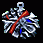 | Убойный удар
Медаль, которая делается патриотичным малокским способом— часть обшивки доминаторского корабля расплющивается ударом кулака самого верховного главнокомандующего. Присуждается воинам, которые самоотверженно освобождали захваченные доминаторами системы.
Выдают
малоки воинам за освобождение системы |
 | Табель воина
Почетная малокская награда для воинов элитных подразделений. На табеле зафиксированы все военные достижения бойца. Если не выдана посмертно— значит, вы признанный воин при жизни.
Выдают
малоки воинам за освобождение системы |
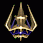 | Трезубчатый орден
Орден в форме боевого трезубца — древнего оружия, которым пользовались воины Рахиша в его лучшие времена— вручается пеленгским правительством активным борцам с доминаторами.
Выдают
пеленги за освобождение системы |
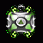 | Дух болот
наградной герметично запаянный металлический микросаркофаг с запахом пеленгских болот. Открывать запрещено, иначе произойдет выброс ароматных газов, и реликвия утратит свою ценность. Почетная награда для пиратов, которые принимали активное участие в освобождении пеленгской системы от доминаторских войск.
Выдают
пеленги пиратам за освобождение системы |
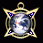 | Медаль Конгресса
Медаль от людского Конгресса Конфедерации— награда воинам, освобождающим Галактику от доминаторов.
Выдают
люди за освобождение системы |
| Именная монета
Платиновая гербовая монета достоинством в одну тысячу кредитов, с выгравированным именем обладателя— специальная награда от торговой палаты людского правительства. Вручается коммерческим пилотам, достигшим успеха в войне с доминаторами.
Выдают
люди торговцам за освобождение системы |
 | Ивикус
Фэянский ивикус— сфера из голографического фосфорита, инкрустированная белыми энергенами— почетная награда для воинов, достигших успеха в борьбе с доминаторами.
Выдают
фэяне за освобождение системы |
 | Мерциновая подвеска
Подвеска из сверхдорогого минерала мерцина. Очень почетная награда. Учреждена правительством фэян для награждения торговцев, принимающих участие в битвах с доминаторами.
Выдают
фэяне торговцам за освобождение системы |
 | Коленвал
Миниатюрная награда от всего фасеточного сообщества для бизнесменов, которое, несмотря на занятость, участвуют в битвах с доминаторами. Выполнена в виде величайшего изобретения фэян— шестеренки, с которой началась эра технического прогресса.
Выдают
фэяне торговцам за освобождение системы |
 | Малый англум
Официальная награда гаальского Магистрата Безопасности для воинов, отличившихся при освобождении систем.
Выдают
гаальцы за освобождение системы |
 | Медаль «Канвен-ивирис»
Награда, учрежденная гаальским Фондом поддержки рейнджеров, в переводе с гаальского означает «нет мира агрессору». Вручается пилотам, борющимся с доминаторами.
Выдают
гаальцы за освобождение системы |
| Орден достоинства
Награда, учрежденная Галактическим Советом. Вручается рейнджерам и прочим пилотам, активно борющимся с доминаторами.
Выдают
все расы за освобождение системы |
 | Гвардейский вымпел
Знак обозначает своего обладателя как первоклассного бойца. Выдается за заслуги, сравнимые с боевыми подвигами малокского народа.
Выдают
малоки за успешное выполнение задания |
 | Значок «Грязный камикадзе»
Этот особый знак был учрежден по сложившейся пеленгской традиции грязевых боев. Его можно получить лишь сильно отличившись перед пеленгским народом.
Выдают
пеленги за успешное выполнение задания |
 | Лягуха с круга
Награда в виде лягушки в круге, символизирующем защиту пеленгов всеми расами. Присуждается пиратам, которые не забывают пеленгских братьев и коллег.
Выдают
пеленги пиратам за успешное выполнение задания |
 | Красный пантеон
Пеленгская почетная награда за вклад в развитие космического предпринимательства и саботажа. Считается, что его владелец - пират, и готов до конца жизни отстаивать ценности пеленгской цивилизации.
Выдают
пеленги пиратам за успешное выполнение задания |
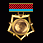 | Золотая звезда героя
Почетная награда людей, говорящая о заслугах перед человечеством. Присуждается лишь избранным. Особенно ярко светится в закатных лучах человеческой звезды Солнце.
Выдают
люди за успешное выполнение задания |
| Тройной ореон
Раздвигающийся трехслойный диск с отпечатками пальцев выдающихся личностей этого столетия. На последнем слое красуются свежие отпечатки пальцев владельца. Это высокая честь, быть внесенным в такую награду, выпадает только гуманоидам, отличившимся перед человечеством.
Выдают
люди за успешное выполнение задания |
 | Ашианская лента
Лента, повторяющая три цвета Ашиана, «города прогресса» на Эйпентаке— синий, фиолетовый и белый. Присуждается лицам, оказавшим помощь фэянской цивилизации.
Выдают
фэяне за успешное выполнение задания |
 | Большой англум
Высшая официальная награда гаальского правительства. Вручается за выдающиеся заслуги перед гаальским народом.
Выдают
гаальцы за успешное выполнение задания |
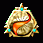 | Урановый млеко
Уникальная награда гамма-воздействия. Говорят, если прикладывать к голове по несколько раз в день, можно отчистить мозг от всех скверных мыслей.
Выдают
гаальцы за успешное выполнение задания |
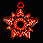 | Медаль элитной охраны
Выполнившие опасное спецзадание пилоты приравниваются по статусу и оказываемым почестям к агентам элитных малокских охранных подразделений, получая соответствующий знак.
Выдают
малоки за выполнение секретной
миссии |
 | Орден скрытой силы
Награда за лучшее исполнение спецопераций. Вручается пиратам, которые всегда выполняют задания, в отличие от торгашей и дипломатов.
Выдают
малоки пиратам за выполнение секретной
миссии |
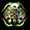 | Бляха «Танцующий пират»
Пиратская награда, получившая название от знаменитого пеленгского клана Танцующих пиратов. Присуждается за успехи в деле борьбы с врагами пеленгского народа.
Выдают
пеленги за выполнение секретной
миссии |
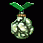 | Сушеный пузырятам
Ранее пузырятам давался утопленникам зеленых болот. Теперь решено было приравнять к ним пиратов. Дается за выполнение спецопераций во имя пеленгской расы.
Выдают
пеленги пиратам за выполнение секретной
миссии |
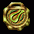 | Зеленая миля
Медаль болотных спецслужб. Сделанная из элитных сортов глины, она обладает уникальными антисептическими свойствами при рассасывании. Рекомендуется носить под одеждой.
Выдают
пеленги за выполнение секретной
миссии |
| Значок Аарона Кинга
Точная копия алюминиевой бляшки, которую носил легендарный шпион Аарон «Рэпер» Кинг. Является официальной наградой людских спецслужб.
Выдают
люди за выполнение секретной
миссии |
 | Галопуговица
Пилотам, отличившимся при выполнении фэянских секретных миссий, вручается галопуговица— одновременно и сувенир, и дорогая оптическая игрушка.
Выдают
фэяне за выполнение секретной
миссии |
| Айбо-3001
Фэянская награда для пиратов, успешно справляющихся с заданиями государственной важности. Выполнена в виде логотипа первой в мире робототехнической компании, создавшей маленького дроида Айбо.
Выдают
фэяне пиратам за выполнение секретной
миссии |
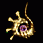 | Некриловая шпилька
Острая шпилька из некрила с инкрустированным именем обладателя— полноценное оружие. Вручается пилоту, активно сотрудничающему с гаальскими службами безопасности.
Выдают
гаальцы за выполнение секретной
миссии |
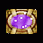 | Карта мира
Награда в виде символической карты Галактики, с отмеченными областями, где царят мирные отношения благодаря гаальским спецслужбам. Награда секретных служб гаальской расы.
Выдают
гаальцы за выполнение секретной
миссии |
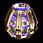 | Алмазная гильза
Награда Галактического Совета, присуждается работникам секретных служб, как штатным, как и внештатным. Служит свидетельством того, что ее владельцу можно доверить любое задание.
Выдают
все расы за выполнение секретной
миссии |
 | Песочный череп
Знак за самое отвратительное, что может быть для малока— трусость. Считается, что голова рассыплется, когда трус станет храбрым. Однако, это еще никогда не подтверждалось.
Выдают
малоки за провал задания |
 | Кроличья голова
Миниатюрная пуховая голова кролика с глазами из серы украшает коллекцию бойца, запятнавшего свою честь позорной трусостью по отношению к людской цивилизации.
Выдают люди за провал задания |
 | Репейник Монго
Пират, не отличающийся храбростью, получает от фэянского правительства репейник Монго— растение со специфическим резким запахом, символ трусости.
Выдают феяне за провал задания |
 | Черная метка
Это очень позорный знак. Обозначает своего носителя как труса, бежавшего с поля боя.
Выдают все расы за убийство военных кораблей |
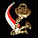 | Ржавый гвоздь
Для бывших храбрых боевых пилотов, а ныне гнусных предателей, малоки имеют специальный знак— медный гвоздь в третьей стадии коррозии. Выдают все расы за убийство рейнджеров (кроме рейнджеров-пиратов)
|
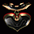 | Черное сердце
Данная вещь служит подтверждением того, что ее владелец не имеет представления о нравственности.
Выдают все расы за убийство транспортных судов |
 | Орден Сааба
Редкая награда в виде перекрестия красных сабель. Вручается за освобождение малокских планет от доминаторов. Военное верховное командование не забывает своих героев.
Выдают
малоки воинам за планетарный бой |
 | Слизняк Отто
Штучный экземпляр наградного сувенира для пиратов, которые приложили немало сил для уничтожения остатков доминаторских войск на родных каждому пирату пеленгских планетах.
Выдают
пеленги пиратам за планетарный бой |
 | Братец Марио
Памятная статуэтка для рейнджеров, которые благодаря предпринимательскому складу ума, смогли очистить планеты людей от доминаторов. Создана в честь великого Марио, по легенде, спасшего не только свою возлюбленную, но и весь мир от врагов.
Выдают
люди торговцам за планетарный бой |
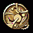 | Кварцевый стинг
Медаль с движущимся внутренним механизмом, показывающим время на всех фэянских планетах сразу. Вручается рейнджерам-героям, освободившим фэянские планеты от металлических оккупантов.
Выдают
фэяне за планетарный бой |
 | Хрустальная чакра
Специальная награда от гаальской организации свободы и чистоты отношений. Вручается рейнджерам, освобождающим от доминаторских войск планеты гаальцев.
Выдают
гаальцы за планетарный бой |
 | Орден Дзухаллага
Награда, выдающаяся членам военной организации «Дзухаллаг» или очень самоотверженным воинам, которые качественно руководили военными действиями на оккупированных планетах.
Выдают
пеленги за планетарный бой |
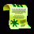 | Кваковая грамота
Грамота малокского правительства вручается воинам, которые, несмотря на превосходящие силы доминаторов смогли освободить малокскую планету от вражеского нашествия.
Выдают
малоки за планетарный бой |
 | Рука помощи
Доверительная награда человеческого правительства за помощь в проведении выигрышной военной кампании против остатков доминаторских войск на планетах человеческой расы.
Выдают
люди за планетарный бой |